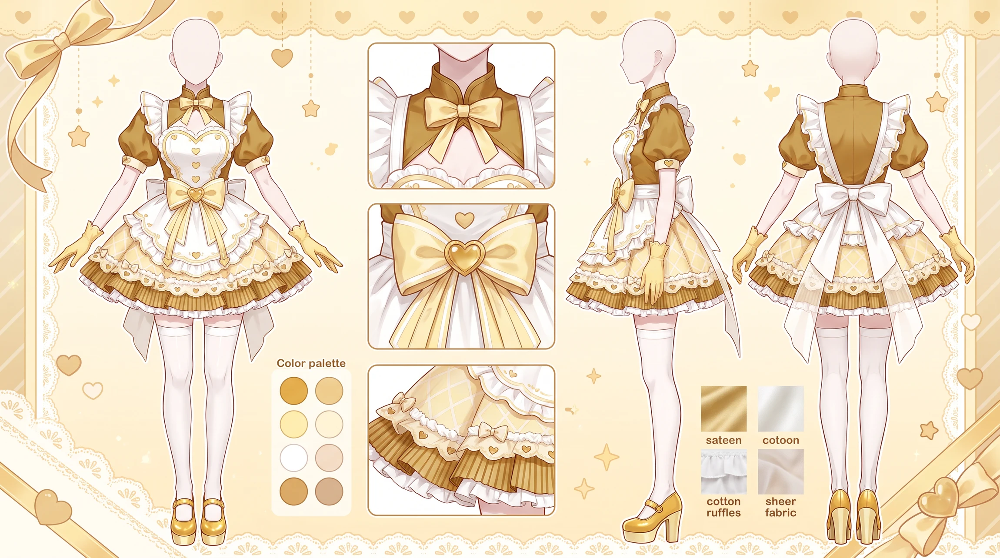
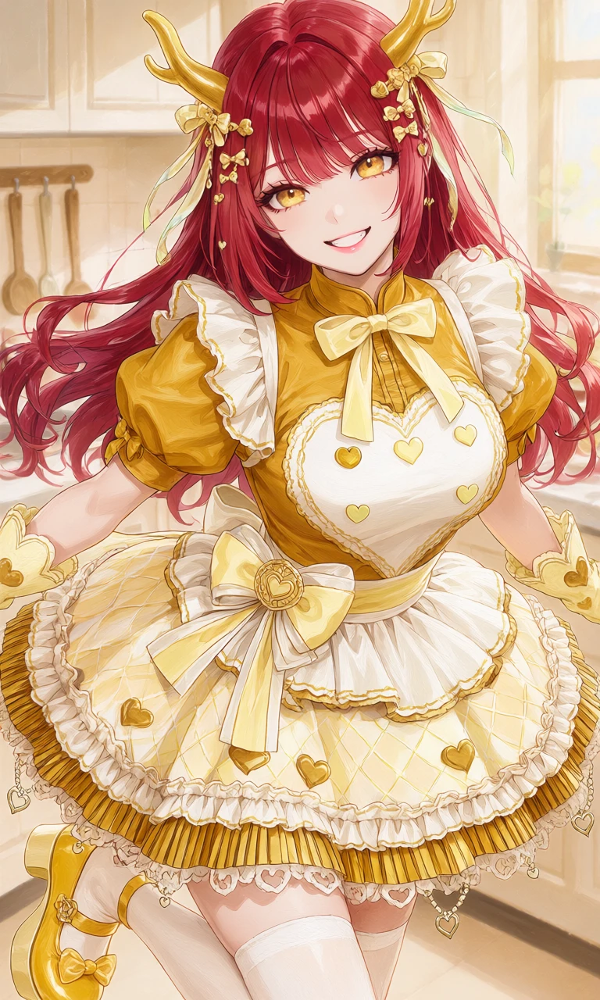
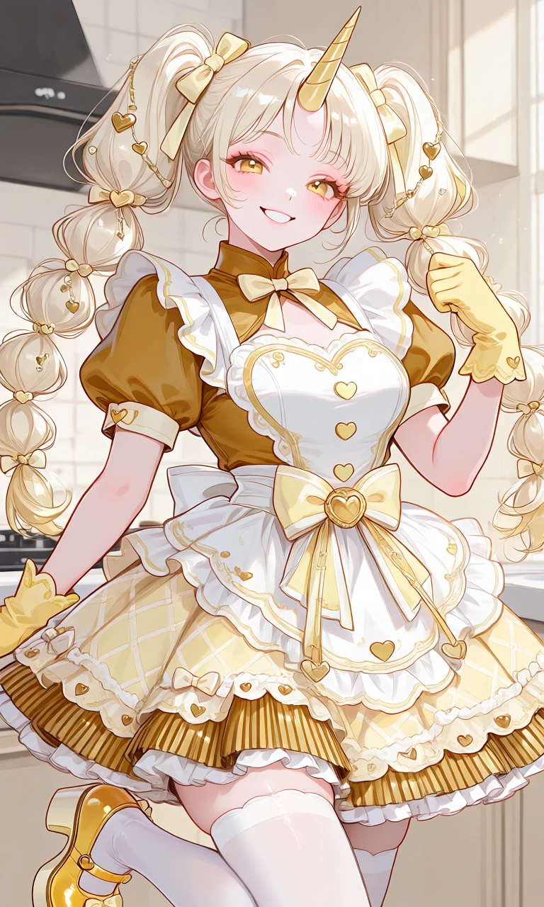

Honeybun Café

Outfit Prompt
An adorable, elaborate golden-yellow and white fantasy idol outfit featuring a fitted decorative bodice, oversized ribbon bows, layered ruffled skirt, and playful heart-shaped embellishments. The ensemble combines deep gold, soft pastel yellow, creamy white, and delicate golden accents in a cheerful, feminine design.
The upper portion features a high standing collar made from rich deep-gold fabric, decorated with a large, soft pastel-yellow ribbon tied into an elegant bow at the center front. The bow has rounded loops and gently hanging ribbon tails.
Short, voluminous balloon-style puff sleeves are made from matching deep-gold fabric, with softly gathered shoulders and neat fitted cuffs. The sleeves have a rounded, structured silhouette that complements the decorative bodice.
The main fitted bodice is made from deep-gold fabric with a gently curved, heart-shaped upper front. A white apron-inspired decorative panel covers the chest and upper torso, featuring a clean, softly curved silhouette and delicate golden edging.
The white front panel is decorated with several round buttons in alternating gold and pastel yellow, accompanied by tiny pastel-yellow heart accents. The fitted waist transitions gently into the layered skirt, while the apron-like panel adds a charming, slightly flared decorative shape.
A large, elaborate multi-layered ribbon bow decorates the center front of the waist. The bow combines soft pastel-yellow and creamy-white satin ribbons arranged in several overlapping loops, with long decorative ribbon tails hanging over the upper skirt. At its center is a circular golden ornament featuring a delicate heart-shaped cutout.
The skirt is short, ending just above the knees, with a full, rounded silhouette created by several decorative fabric layers.
The upper skirt features overlapping creamy-white ruffled panels with delicate gold and pastel-yellow trim. The ruffles are softly gathered, creating a playful, voluminous shape around the hips.
The main visible lower skirt panel features a soft pastel-yellow and white diamond lattice pattern, resembling a delicate argyle design. Small dark-gold heart shapes decorate the centers of the diamonds, creating a coordinated heart-themed pattern.
Beneath the patterned skirt is a deep-gold pleated underskirt, with crisp, evenly spaced pleats peeking out along the lower hem. The pleated layer adds structure and creates a neat decorative border beneath the softer ruffles.
Additional small white and yellow ruffles decorate the bottom edge, accompanied by tiny heart-shaped cutouts and delicate dangling heart ornaments.
White thigh-high tights feature a smooth, opaque finish, extending to the upper thighs and complementing the white decorative panels of the dress.
Soft golden-yellow over-mittens cover the hands and wrists, featuring a comfortable rounded silhouette and adorable repeating gold heart patterns. The mittens have delicate pastel-yellow trim and small decorative heart accents.
Matching golden-yellow Mary Jane platform shoes feature rounded toes, glossy golden straps, small heart-shaped buckles, and thick creamy-white platform soles. Tiny pastel-yellow ribbon bows decorate the front of each shoe.
Hair accessories include delicate pastel-yellow decorative chains designed to wrap around or drape between sections of tied hair. The chains feature tiny golden links, pastel-yellow beads, miniature heart charms, and small decorative bows. They can be arranged to complement different hairstyles without requiring a specific hair color or length.
The complete ensemble combines deep-gold fabric, soft yellow satin ribbons, creamy-white apron details, playful heart decorations, and layered ruffled textures. Its elaborate bows, golden accents, and sweet pastel colors create a charming, cheerful, and beautifully coordinated fantasy idol outfit.
Outfit Examples



